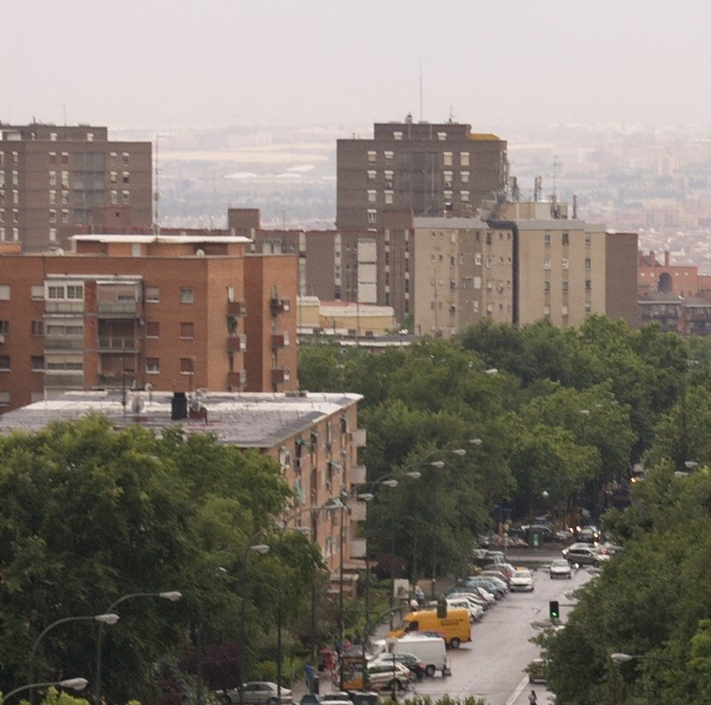

Vinateros
Vinateros es un barrio del distrito de Moratalaz, en Madrid. Limita al norte con el barrio de Marroquina, al sur con Fontarrón y al este con Pavones. Tiene la forma trapezoidal delimitado por la avenida de Moratalaz, la Hacienda de Pavones, Fuente Carrantona y Pico de Artilleros-Luis de Hoyos Sanz.
Cuenta con una población de 16933 habitantes, con una densidad de 28 507,74 hab/km². Además cuenta con 5 líneas de autobuses que conectan con otras zonas de Madrid y del distrito:
- 20. Sol/Sevilla - Pavones
- 30. Felipe II - Pavones
- 32. Jacinto Benavente - Pavones
- 71. Manuel Becerra - Puerta de Arganda
- 100. Moratalaz - Valderrivas